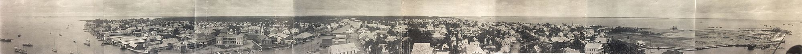

Explorando la belleza y diversidad de la región
Belice (en inglés: Belize) es un país soberano de América ubicado en el extremo noreste de América Central. Limita al norte con México y al sur y oeste con Guatemala, y el golfo de Honduras lo separa del país homónimo. La capital es la ciudad de Belmopán y la ciudad más poblada es la Ciudad de Belice, que sirvió como capital hasta el año 1970, cuando la destrucción causada por el huracán Hattie obligó al gobierno a transferir la capital a la entonces comunidad planeada de Belmopán, fundada en 1960. Es el único país de América Central cuya forma de gobierno está organizada en una monarquía constitucional parlamentaria, donde el Rey del Reino Unido ejerce como jefe de Estado y es representado en el país por un gobernador general. La cultura maya se extendió al territorio de Belice entre 1500 a. C. y 300 d. C. y floreció hasta aproximadamente el siglo XIII. El contacto europeo comenzó en 1492 cuando Cristóbal Colón navegó a lo largo del Golfo de Honduras.La exploración europea fue iniciada por colonos ingleses en 1638. Este período también estuvo marcado por un conflicto entre España y Gran Bretaña por el territorio hasta que Gran Bretaña derrotó a los españoles en la Batalla de Cayo San Jorge en 1798. Se convirtió en colonia británica en 1840, conocida como Honduras Británica. Obtuvo la independencia del Reino Unido el 21 de septiembre de 1981 y adquirió su actual nombre, por la ciudad de Belice, a su vez nombrada por el río Belice. Belice tiene un área de 22 900 km² y una población de 387 879 habitantes (2017). Tiene la menor población y densidad de toda América Central. El crecimiento poblacional anual era de 1.87 % en 2015, el segundo más alto de la región y de los más altos en todo el hemisferio oeste. Aunque los idiomas predominantes son el español y el criollo beliceño, Belice es el único país de América Central en donde el idioma oficial es el inglés, aunque solo el 62.9 % de la población lo habla como idioma secundario (3 % como lengua madre) comparado con el 56.6 % de la población que habla español, el 44.6 % que habla criollo beliceño y 10.5 % que habla maya. Belice comparte un pasado común no solo con los países de América Central, sino también con el Caribe. Forma parte de la Mancomunidad de Naciones, del Caricom y del Sistema de la Integración Centroamericana (SICA).
Belice fue parte del área cultural maya, que se extendía desde el sur de México hasta Guatemala y Honduras. La ocupación más temprana del territorio corresponde a la mitad del segundo milenio a. C., la cual tuvo cierto desarrollo en torno al siglo IX de nuestra era. El centro político y cultural más importante de la región era el sitio conocido en la actualidad como El Caracol, cuyas inscripciones se encuentran en aristocrática variante del maya, llamado Ch’olti’an Clásico por los epigrafistas. Al norte de las Montes Maya las inscripciones de Lamanai se encuentran en yucateco desde el siglo VII. En el periodo Clásico vivían en el actual territorio beliceño cerca de 400 000 personas y, si bien hubo un descenso de la población durante el Posclásico, las tierras bajas mayas seguían ocupadas cuando arribaron los europeos en el siglo XVI; para entonces los principales habitantes eran los mopanes, una rama de los yucatecos.
Los conquistadores españoles exploraron la región a partir de 1519, la incorporaron a la Corona de Castilla y el territorio pasó a ser parte de la capitanía General de Guatemala, si bien optaron por no colonizarla debido a la falta de recursos como el oro y la fuerte defensa de la península de Yucatán por los mayas. En el siglo XVII, marinos ingleses navegaron por la zona dedicándose a la piratería y a la tala del palo de Campeche para la producción de tinte. El tratado de Madrid de 1670 puso fin a los ataques piratas, con lo que los ingleses se concentraron en cortar palo de Campeche. Con la madera se producía un agente de fijación para los tintes de ropa que era vital para la industria lanar europea. España otorgó licencia de ocupar el área a los colonos británicos a condición de que cesaran los actos de piratería. En 1716 unos taladores británicos expulsados por los españoles de la bahía de Campeche se instalaron en la región del río Belice. A lo largo del siglo XVIII españoles y británicos intercambiaron ataques cada vez que se declaraba la guerra entre las dos potencias. Un ejemplo es la batalla del Cayo San Jorge, del 10 de septiembre de 1798. El aniversario de esta batalla ha sido declarado fiesta nacional de Belice. Los británicos esperaron hasta el año 1789 para nombrar el primer superintendente del territorio de Belice. Anteriormente, el gobierno británico no reconoció el asentamiento de Belice como una colonia, por temor a provocar un ataque español ya que el territorio pertenecía formalmente a España. La falta de implicación del gobierno británico permitió a los colonos el establecimiento de sus propias leyes y formas de gobierno. Durante este tiempo unos pocos colonos ricos ganaron el control de la legislatura local, conocida como Public Meeting («Reunión Pública»), así como de la mayor parte de las tierras y madera.
El dominio nominal de España sobre Belice terminó con las guerras de independencia hispanoamericanas, a principios del siglo XIX. En 1825, el nuevo estado de México fue reconocido oficialmente por los británicos y el año siguiente renunció a toda pretensión sobre Belice mientras la República Federal de Centro América negociaba términos similares. En el siglo XIX, los británicos ejercieron un mayor control sobre los colonos, amenazando con la suspensión del Public Meeting a menos que se observaran las instrucciones del gobierno con respecto a la abolición de la esclavitud. Aunque la esclavitud fue abolida en 1838 en el Imperio británico, las condiciones de trabajo de los trabajadores en la colonia de Belice eran denigrantes. Los esclavos de la colonia eran valorados por sus habilidades en la extracción de caoba. Como resultado, los antiguos dueños de esclavos en la Honduras británica ganaban 53,69 £ de promedio por esclavo, el monto más alto pagado en cualquier parte del Imperio británico. Poco después, se pusieron en marcha una serie de instituciones para garantizar la presencia continua de una fuerza de trabajo viable. Algunas de ellas limitaron la capacidad de las personas para obtener tierra, mediante un sistema de peonaje por deudas que permitió mantener a los antiguos esclavos «liberados» como fuerza de trabajo. Debido a que una pequeña élite controlaba la tierra y el comercio de la colonia, los antiguos esclavos no tenían otro remedio que seguir trabajando como leñadores. En 1836 los británicos reclamaron el derecho de administrar el territorio de Belice, pero las Provincias Unidas de América Central se negaron. Como consecuencia, los británicos pactaron con México la explotación de madera y tintes. Los británicos, por consiguiente, comenzaron a invadir el territorio de Guatemala, con la excusa de que tenían derechos sobre este. Sin embargo, los británicos habían acordado con los españoles explotar recursos hasta el río Sibum, pero con el paso del tiempo, fueron tomando más territorio hasta llegar cerca de Izabal (departamento de Guatemala) y en 1862, el Reino Unido lo declaró formalmente como una colonia de la Corona británica, subordinada a Jamaica, bautizada con el nombre de Honduras Británica (en inglés: British Honduras). Como colonia, Belice comenzó a atraer a inversores británicos. Entre las empresas británicas que dominaron la colonia en el siglo XIX se encuentra la Belize Estate and Produce Company, que logró adquirir la mitad de todas las tierras de propiedad privada del territorio. La gran influencia de esta compañía privada se explica en parte por la dependencia de la colonia del comercio de caoba durante el resto del siglo XIX y la primera mitad del siglo XX.
 Vista panorámica de la ciudad de Belice, c. 1914.La Gran Depresión de 1930 provocó un colapso casi total de la economía colonial, ya que la demanda británica de madera se desplomó. Los efectos del desempleo generalizado se agravaron por un huracán devastador que afectó a la colonia en 1931. Los esfuerzos de rescate y reconstrucción del gobierno fueron percibidos como inadecuados, una situación que agravó tras su negativa ante las llamadas populares de legalizar los sindicatos e introducir un salario mínimo. Las manifestaciones y los disturbios de 1934 marcaron el comienzo de un movimiento nacionalista a favor de la independencia. En respuesta, el gobierno revocó las sanciones penales contra los trabajadores que violaron los términos de sus contratos de trabajo por haberse afiliado a sindicatos, y concedió a estos el derecho de afiliación a los mismos. Las condiciones económicas mejoraron durante la Segunda Guerra Mundial (1939-1945), cuando muchos hombres de Belice ingresaron en las fuerzas armadas o contribuyeron como fuerza laboral al esfuerzo bélico. Después de la guerra, la economía de la colonia se estancó nuevamente debido a las presiones causadas por los efectos perjudiciales de la guerra. La decisión británica de devaluar el dólar de la Honduras británica en 1949 empeoró las condiciones económicas y condujo a la creación del Comité del Pueblo, que exigía la independencia. El sucesor del Comité del Pueblo, el Partido Unido del Pueblo (PUP), solicitó reformas constitucionales y la ampliación de los derechos de voto a todos los adultos.
Las reformas constitucionales se iniciaron en 1954 y dieron lugar a una nueva Constitución diez años más tarde. Reino Unido concedió a la Honduras Británica el autogobierno en 1964, y el líder del PUP, George Price, fue nombrado primer ministro de la colonia. La Honduras Británica fue rebautizada oficialmente como «Belize» en 1973. El progreso hacia la independencia, sin embargo, se vio obstaculizado por una reclamación guatemalteca de soberanía del territorio. Belice, finalmente, alcanzó la plena independencia el 21 de septiembre de 1981, aunque Guatemala se negó a reconocer a la nueva nación. Unos 1500 soldados británicos se quedaron para proteger Belice de la amenaza guatemalteca. Con Price a la cabeza, el PUP ganó todas las elecciones hasta 1984. Ese año el PUP fue derrotado por el Partido Democrático Unido (UDP) (United Democratic Party), y el líder del UDP, Manuel Esquivel, reemplazó a Price como primer ministro beliceño. Price regresó al poder tras las elecciones de 1989. El presidente de Guatemala reconoció formalmente la independencia de Belice en 1992. Al año siguiente, el Reino Unido anunció que pondría fin a su participación militar en Belice. Los soldados británicos se retiraron en 1994, pero el Reino Unido dejó una unidad de entrenamiento militar para ayudar a la recién creada Fuerza de Defensa de Belice. El UDP recuperó el poder en las elecciones de 1993 nacional, y Esquivel fue nombrado primer ministro por segunda vez. Poco después, Esquivel anunció la suspensión de un pacto alcanzado con Guatemala durante el mandato de Price. El pacto redujo la disputa fronteriza de 130 años de edad entre los dos países. Las tensiones fronterizas continuaron en la década del 2000, aunque los dos países cooperaron en otras áreas. El PUP obtuvo una victoria aplastante en las elecciones nacionales de 1998, y líder del PUP, Said Musa, prestó juramento como primer ministro. En las elecciones de 2003 el PUP (People’s United Party) mantuvo su mayoría, y Musa continuó como primer ministro. Se comprometió a mejorar las condiciones en el sur subdesarrollado y en gran parte inaccesible de Belice. En 2005, Belice fue escenario de disturbios causados por el descontento con el gobierno del People’s United Party (PUP), que aumentó los impuestos. El 8 de febrero de 2008, Dean Barrow prestó juramento como primer ministro después de que el UDP obtuviera una aplastante victoria en las elecciones generales. Tras 12 años de gobierno de Barrow, en 2020 el PUP regresó al poder bajo el liderazgo de Johnny Briceño.
Conoce en detalle los símbolos patrios de Belice y su significado en esta completa guía. Descubre la historia y la cultura detrás de la bandera nacional, el escudo de armas, el ave, la flor y el árbol nacionales de Belice. Explora la riqueza cultural de este pequeño país centroamericano y su importancia en la sociedad beliceña actual. Sigue leyendo y descubre todo lo que necesitas saber sobre los símbolos patrios de Belice. Belice es un pequeño país centroamericano que cuenta con una rica historia y cultura, plasmada en sus diversos símbolos patrios. Estos símbolos son representativos de la identidad y la historia del país, y han sido adoptados como emblemas oficiales por el gobierno y la sociedad beliceña. Belize obtuvo su independencia del Reino Unido en 1981. Como nación soberana pasó por un proceso democrático para seleccionar a sus símbolos nacionales. Todos los símbolos fueron seleccionados con apoyo bipartito de los dos principales partidos políticos. Entre los símbolos patrios de Belice se encuentran la bandera nacional, el escudo de armas, el ave nacional, la flor nacional y el árbol nacional. Cada uno de estos elementos posee una gran carga simbólica y representa una parte importante de la historia y la cultura del país. En este artículo, exploraremos en detalle cada uno de los símbolos patrios de Belice y su significado, así como su importancia en la sociedad beliceña actual. Si quieres conocer más acerca de los símbolos patrios de Belice, sigue leyendo y descubre la riqueza cultural de este país centroamericano.
La bandera de Belice , roja, blanca y azul, es un símbolo de la unidad de nuestra nación. Antes de la Independencia, el People's United Party (PUP) propuso una bandera azul con el escudo de armas en un círculo blanco. Debido a la estrecha asociación de la marca con el PUP, la opinión pública estaba dividida en cuanto a su idoneidad para actuar como un símbolo unificador. El Partido Democrático Unido (UDP) no propuso una bandera, pero pidió una bandera que podría unir a todos los ciudadanos, independientemente de su afiliación política. Como consecuencia, el comité bi-partidista de símbolos nacionales invitó a los ciudadanos a presentar sus diseños para una bandera nacional. El diseño seleccionado por el Comité es una bandera azul marino con una franja roja horizontal en la parte superior, uno en la parte inferior, y un círculo blanco con el escudo en el centro
El escudo del escudo de armas se divide en tres secciones por una línea vertical y una V invertida. La sección base representa un barco a toda vela en las olas del mar. Las dos secciones superiores muestran herramientas de la industria de la madera en Belice: una pala y un hacha de cuadrar en la sección derecha y una sierra y un hacha golpeando en la parte izquierda. Soportando el escudo hay dos leñadores, el de la derecha sostiene un hacha golpes por encima del hombro en su mano derecha, y el de la izquierda sostiene un remo sobre el hombro en su mano izquierda. Sobre el escudo se levanta un árbol de caoba. Debajo del escudo es el lema de desplazamiento. Una corona de hojas rodea el escudo de armas. El escudo de armas representa un aspecto importante de la historia de Belice, como la industria de la caoba, formaron la base de nuestra economía en los siglos 18 y 19. Lema nacional: "Sub Umbra Floreo" - estas palabras en latín significa "Bajo la sombra florezco".
The Orchid Negro (Encyclia Cochleatum) es la Flor Nacional de Belice. Esta orquídea crece en los árboles en zonas húmedas, y las flores casi todo el año. Su bulblike agrupado tallos varían en tamaño de hasta seis pulgadas de largo y llevan dos o tres hojas. La flor de la orquídea negro tiene pétalos de color amarillo-verdoso y sépalos con manchas moradas cerca de la base. El "labio" (un pétalo de construcción especial, que es más vistosa de la flor) tiene la forma de una válvula de una concha de almeja (de ahí el nombre de Encyclia Cochleatum) y es profunda morado, casi negro, con visible irradia venas de color púrpura.
El árbol de caoba (Swietenia Macrophilla) es uno de los gigantes de la magnífica de la selva. El aumento de recto y alto a más de un centenar de metros de grandes contrafuertes en las raíces, emerge por encima del dosel de los árboles de los alrededores, con una corona de hojas grandes, verdes brillantes. En los primeros meses del año, cuando las hojas caen y rojo nuevo crecimiento morena aparece, el árbol puede verse desde una gran distancia. El árbol pone a cabo una gran oleada de pequeñas flores blancas - la flor de las frutas oscuras, que son en forma de pera cápsulas de seis pulgadas de largo. Cuando los frutos maduros se dividieron en cinco válvulas, liberando grandes semillas aladas, que son arrastrados por el viento. Caen sobre la protección de la sombra del suelo del bosque y germinar para comenzar un nuevo ciclo de vida. El árbol de caoba madura en 60 a 80 años. Los colonos británicos explotaron los bosques de caoba, comenzando alrededor de la mitad del siglo 17. Originalmente fue exportado al Reino Unido en forma de troncos cuadrado, pero ahora el envío consiste principalmente de madera aserrada. El árbol de caoba forma parte del Escudo de Armas de Belice. El lema "Sub Umbra Floreo" significa: Bajo la sombra (del árbol de caoba) florezco.
El Tucán de Quilla (Ramphastos Solfurantus) es el ave nacional de Belice. Es conocido por su gran proyecto de ley en forma de canoa, de colores verde, azul, rojo y naranja plumas. El ave es de unos 20 centímetros de longitud total. Es sobre todo negro con las mejillas de color amarillo brillante y el pecho, rojo debajo de la cola y una mancha blanca distintiva en la base de la cola. Los tucanes se encuentran en zonas abiertas del país, con grandes árboles. Hacen un ruido parecido al croar de las ranas. A los tucanes les gustan las frutas, y comen por el corte con el borde dentado de sus picos. Los tucanes anidan en agujeros de árboles, utilizando orificios naturales o los agujeros hechos por pájaros carpinteros, a menudo ampliando la cavidad mediante la eliminación de la madera podrida y suave. Ponen dos a cuatro huevos que son incubados por ambos padres. La etapa de anidación se extiende de seis a siete semanas.
El Tapir de Montaña o de vaca (Tapirello bairdii) es el mamífero terrestre más grande de los trópicos americanos. El tapir es un animal fornido con las piernas cortas, aproximadamente del tamaño de un burro y un peso de hasta 600 libras. Su color general es de polvo de color marrón con una franja blanca alrededor de los ojos y los labios, orejas de punta blanca y ocasionales manchas blancas en la piel de la garganta y el pecho. A pesar de su nombre local, el tapir no es una vaca. Está estrechamente relacionado con el caballo y también es pariente del rinoceronte. El tapir es un vegetariano. Se pasa gran parte de su tiempo en agua o en aguas poco profundas de barro, y es un nadador fuerte. El animal nacional está protegido por las leyes de protección de la vida silvestre de Belice, por lo que la caza del tapir es ilegal..
Belice está situada en la costa caribeña del norte de Centroamérica. Comparte frontera al norte con el estado mexicano de Quintana Roo, al oeste con el departamento guatemalteco de Petén, y al sur con el río Sibún. Al este del mar Caribe se encuentra la segunda barrera de arrecifes más larga del mundo. El área total del país es 22 966 km²,sin embargo el territorio real de Belice es de apenas 4323.964 km², siendo el resto unos 12 272 km² en litigio con Guatemala, hasta que dicho litigio sea llevado a la Corte Internacional de Justicia. Belice tiene forma de un rectángulo que se extiende alrededor de 100 km norte-sur y sobre 95 km de este a oeste. Su longitud total de frontera terrestre de 542 km. Los cursos ondulantes de dos ríos, el Hondo y el Sibún, definen gran parte del curso de las fronteras norte y sur del país. La frontera occidental sigue sin características naturales y corre de norte a sur a través de bosques de tierras bajas y tierras altas de meseta. El norte de Belice consiste principalmente de llanuras costeras planas y pantanosas, densamente forestadas. La flora es muy diversa teniendo en cuenta el espacio tan reducido. En el sur, se encuentra la baja sierra de las Montañas Maya. El punto más alto de Belice es Doyle Delight con 1124 metros (3688 pies). La costa caribeña está bordeada de arrecifes de coral y unos 450 islotes e islas conocidas localmente como Cayos («cayes»). Tres de los cuatro arrecifes de coral del Hemisferio Occidental se encuentran frente a las costas de Belice. La accidentada geografía de Belice también ha hecho que la costa y la selva sean atractivas para los narcotraficantes, que utilizan el país como puerta de entrada de estupefacientes a México. En el 2011, los Estados Unidos agregaron a Belice a la lista de naciones consideradas como los mayores productores de droga o países de tránsito para narcóticos.
Más del 60 % de la superficie terrestre de Belice está cubierta por bosques. Estudios recientes muestran que el 20 % del país está cubierto por cultivos y asentamientos humanos. Sabanas, matorrales, y tierras húmedas constituyen el resto de la superficie del país. Belice es parte del importante corredor biológico mesoamericano, con gran diversidad biológica, tanto marina como terrestre. El país cuenta con una flora y fauna abundante. La ciudadanía protege la gran biodiversidad y los recursos naturales. Un informe de 2010 de la Association of Protected Area Management Organizations of Belice (APAMO) indica que el 36 % del territorio está bajo algún tipo de protección, dándole a Belice uno de los más extensos sistemas de protección ecológica de América. Estos datos han sido verificados por la Organización de Manejo de Áreas Protegidas de Belice (APAMO). Cerca de Costa Rica que, en cambio, solo tiene el 25,8 % de su territorio protegido. El 13 % de las aguas territoriales de Belice —hogar del Sistema Arrecifal de barrera de Belice— también están protegidos. El Sistema de Reservas de la Barrera del Arrecife de Belice es declarado Patrimonio de la Humanidad por la UNESCO. Un estudio publicado en agosto de 2010 reveló que el área total de los bosques de Belice a principios de 2010 constituía aproximadamente el 62,7 % de su superficie, por debajo del 75,9 % de finales de 1980 Un estudio conducido por Estudios Forestales Tropicales de Belice y Conservation International reveló tendencias similares en términos de la cobertura forestal de Belice. Ambos estudios indican que, cada año, el 0,6 % de la cubierta forestal de Belice se pierde, lo que se traduce en un promedio de 24 835 acres (10 050 ha) cada año. El USAID apoyado por SERVIR también mostró que las áreas protegidas de Belice han sido muy eficaces en la protección de los bosques beliceños. Solo el 6,4 % de los bosques dentro de áreas protegidas legalmente fueron talados entre 1980 y 2010 y más de una cuarta parte de los bosques que se encuentran fuera de las áreas protegidas se habían perdido entre 1980 y 2010. Al ser un país con una cubierta forestal relativamente alta y una baja tasa de deforestación, Belice tiene un potencial significativo para la participación en iniciativas tales como REDD. Cabe destacar que el estudio de SERVIR sobre la deforestación de Belice también fue reconocido por el Grupo de Observaciones de la Tierra (GEO), del que Belice es una nación miembro.
La Barrera de Coral de Belice es una serie de arrecifes de coral que se extienden por la costa de Belice, a unos 300 metros de la costa en el norte y a 40 kilómetros en el sur, dentro de los límites del país. El Arrecife de Belice es una sección de 300 kilómetros del Sistema Arrecifal Mesoamericano, de 900 kilómetros, que se extiende desde Cancún, en el extremo noreste de la Península de Yucatán, hasta Honduras, pasando por la Riviera Maya, lo que lo convierte en uno de los mayores sistemas de arrecifes de coral del mundo. Es el principal destino turístico de Belice, popular para el buceo y el submarinismo, y atrae a casi la mitad de sus 260 000 visitantes. También es vital para su industria pesquera. En 1842, Charles Darwin lo describió como "el arrecife más notable de las Indias Occidentales". La barrera de coral de Belice fue declarada Patrimonio de la Humanidad por la UNESCO en 1996 debido a su vulnerabilidad y al hecho de que contiene importantes hábitats naturales para la conservación in situ de la biodiversidad.
El clima local es tropical y normalmente muy cálido y húmedo, aunque hay variaciones significativas en los patrones del clima por región. Las temperaturas varían según la elevación, proximidad a la costa, y los efectos moderadores de los vientos alisios del noreste fuera del Caribe. Las temperaturas medias en las regiones costeras oscilan desde los 24 °C en enero a los 27 °C en julio. Las temperaturas son ligeramente más altas hacia el interior, excepto en las mesetas altas del sur, tales como el Mountain Pine Ridge, donde el clima es notablemente más frío. En general, las estaciones están marcadas más por las diferencias de humedad y precipitación que por las de temperatura. La precipitación media varía considerablemente, desde 1350 mm en el norte y oeste a más de 4500 mm en el extremo sur. Las diferencias estacionales en las precipitaciones son mayores en las regiones del norte y el centro del país en las que, entre enero y abril o mayo, hay menos de 100 mm de precipitación por mes. La estación seca es más corta en el sur que por lo general solo dura desde febrero hasta abril. Hay un período corto menos lluvioso conocido localmente como el «poco seco», que por lo general se produce a finales de julio o agosto, después de la aparición inicial de la temporada de lluvias. Los huracanes han sido devastadores en la historia de Belice. En 1931, un huracán sin nombre destruyó más de las dos terceras partes de los edificios de Ciudad de Belice y mató a más de 1000 personas. En 1955, el huracán Janet devastó la norteña ciudad de Corozal. Solo seis años más tarde, el huracán Hattie azotó la zona costera central del país, con vientos de más de 300 km/h y 4 m de marea. La devastación de Ciudad de Belice, por segunda vez en treinta años llevó a la reubicación de la capital a 80 km, hacia el interior. La ciudad planificada de Belmopán se convirtió en la nueva capital. El huracán Greta causó más de 25 millones de dólares en daños a lo largo de la costa sur en 1978. El 9 de octubre de 2001, el huracán Iris tocó tierra en Monkey River Town con vientos de 145 km/h y tormentas de categoría cuatro. La tormenta demolió la mayor parte de las casas del pueblo, y destruyó la cosecha de plátano. En 2007 el huracán Dean tocó tierra como tormenta de categoría cinco solo a 25 kilómetros al norte de la frontera con México. Dean causó grandes daños en el norte de Belice. En 2010, Belice se vio directamente afectado por el huracán Richard, de categoría 2, que tocó tierra a unos 32 kilómetros (20 mi) al sur-sureste de la ciudad de Belice, alrededor de las 00:45 UTC del 25 de octubre de 2010. La tormenta se desplazó tierra adentro hacia Belmopán, causando daños estimados en 33,8 millones de dólares beliceños (17,4 millones de dólares estadounidenses de 2010), principalmente por los daños a los cultivos y a las viviendas.61 El huracán más reciente que afectó al país fue el huracán Nana en 2020.
La parte norte del territorio del país está atravesada por numerosos cursos de agua y es predominantemente llana, la zona costera se caracteriza por la presencia de numerosas lagunas y pantanos costeros, hacia el noroeste hay extensos bosques tropicales. En cambio, la parte meridional está dominada por las mesetas y valles bajos de las Montañas Mayas, una cadena de relieves que alcanza su máxima altura con Doyle's Delight (1124 m s.n.m.) situada en la parte meridional de las Montañas Mayas. La zona sur, al sur de la cuenca de las Montañas Mayas, consiste en una fértil llanura aluvial donde abundan las plantaciones de cítricos y plátanos; esta zona es la menos poblada del país. El área de la costa es de 386 km, y está bordeada por un extenso arrecife de coral compuesto por unas 450 islas e islotes llamados localmente cayos, que forman la barrera de coral de Belice, de 322 km de longitud, la segunda barrera de coral más larga del mundo después de la Gran Barrera de Australia. La isla principal es Cayo Ambergris, situada en la desembocadura de la bahía de Chetumal; frente a la costa se encuentran también tres de los cuatro atolones de coral del hemisferio occidental, Arrecife de Glover, las islas Turneffe y el Arrecife Lighthouse.
Desde la perspectiva de la estratigrafía moderna, la antigua colonia británica sigue estando en el "fin del mundo" o cerca de él en lo que respecta a la nomenclatura estratigráfica formal y la cartografía geológica precisa. Belice tiene una gruesa sección estratigráfica de llanura costera compuesta por estratos mesozoicos y cenozoicos expuestos y subsuperficiales, que están subyacentes a estratos paleozoicos deformados y metamorfoseados y a rocas ígneas intrusivas Desde la preparación del estudio estratigráfico relativamente extenso de Giovanni Flores, que fue escrito para la Bahamas Exploration Company, Ltd., no se ha realizado un análisis detallado de todas las unidades estratigráficas en la zona norte de Belice. Flores describió todas las unidades estratigráficas de Belice como informales y siguen siéndolo en la actualidad.En 1986, se elaboró un mapa geológico provisional de Belice para la Oficina del Petróleo del Ministerio de Recursos Naturales. Al igual que el informe de Flores, este esfuerzo cartográfico tampoco incluyó ninguna estratigrafía formalizada. El Ministerio no publica materiales tales como una guía estratigráfica y no actúa como un centro de intercambio de información para la nomenclatura estratigráfica, por lo que Belice no tiene una estratigrafía formal (es decir, estratigrafía formal en el sentido habitual de ese término como la Comisión Norteamericana de Nomenclatura Estratigráfica o NACSN o la Unión Internacional de Ciencias Geológicas y Sociedad Geológica de Estados Unidos No hay localidades tipo debidamente designadas para ninguna de las unidades estratigráficas informales (aunque estudios realizados en 1952 y posteriormente en 1975) sugirieron algunas secciones tipo o mencionan algunas localidades tipo para algunas de las unidades que se han estudiado. El Paleozoico está representado por algunas rocas ígneas intrusivas y una secuencia de unidades estratigráficas sedimentarias y metasedimentarias, todas ellas situadas en las Montañas Mayas de Belice. Las rocas ígneas intrusivas forman el complejo granítico de base en las Montañas Mayas de Belice. El granito Mountain Pine Ridge, se cree esta formado por varias composiciones de granito debido a "varios episodios de intrusión", subyace al grupo Santa Rosa. Algunas fuentes considera que el granito Mountain Pine Ridge es aproximadamente el equivalente en edad al Granito Rabinal de Guatemala y al Gneis Chaucus de México. Además de los granitos, en 1985 se señalaron algunas rocas cataclásticas graníticas de edad desconocida que afloran cerca de Mountain Pine Ridge en las Montañas Mayas
Belice es un país con una rica variedad de vida silvestre, debido a su posición única entre América del Norte y América Central, y una amplia gama de climas y hábitats para la vida vegetal y animal. La baja población humana de Belice, y aproximadamente 8867 millas cuadradas (22 970 km²) de tierra no distribuida, proporciona un hogar ideal para más de 5000 especies de plantas, y un gran número de especies de animales - con varios cientos de vertebrados incluyendo armadillos, serpientes y monos. La gran mayoría de los animales de Belice pertenecen a diversos linajes que son "no vertebrados", con muchos artrópodos, moluscos, anélidos, nematodos y a menudo un sinnúmero de otros poco estudiados. La avifauna de Belice incluye un total de 590 especies, de las cuales dos están en peligro de extinción a nivel mundial y cuatro han sido introducidas por el hombre. En los bosques tropicales de Belice hay muchas especies de salamandras, sapos y ranas, como la salamandra rufescente, la rana arborícola de ojos rojos, la rana de lluvia maya, el sapo marino y el sapo mexicano de madriguera. De las 450 especies de salamandras que hay en el mundo, solo seis tipos se encuentran en Belice, todas ellas pertenecientes a la familia Plethodontidae. Este grupo de salamandras son las salamandras sin pulmones, lo que significa que no respiran por los pulmones, sino por los poros de su piel húmeda. En Belice viven tres especies de sapos, de un total de más de 300. El sapo más grande conocido se encuentra en Belice, el sapo marino. Puede llegar a medir 20 cm y pesar hasta 1,2 kg. Estos sapos son más comunes en los asentamientos humanos que en la naturaleza. Se han adaptado a los asentamientos humanos, por lo que se alimentan de la comida de gatos o perros que se deja para las mascotas de la casa. En Belice, hay dos especies de cocodrilos que merodean por sus aguas, el cocodrilo americano y el cocodrilo de Morelet. Aunque ambas especies no son especialmente agresivas, se encuentran como un peligro para los humanos. El cocodrilo americano puede llegar a medir hasta 6,4 m, siendo la media unos 4 m. Suelen encontrarse en los pantanos y tierras bajas de Belice. El cocodrilo de Morelet, que es más pequeño, puede crecer hasta 4 m, pero el tamaño medio es de 2,5 m. Estos cocodrilos se ven sobre todo a lo largo de la costa del norte y el centro de Belice en agua dulce. Belice tiene muchas especies y tipos de tortugas. Hay tres especies de tortugas marinas de caparazón duro, como la caguama, que mide de media 2,3 metros y pesa 540 kilogramos. Se encuentran en los océanos abiertos y en las aguas costeras de Belice. Otra es la tortuga verde, que mide una media de 1,5 m y puede pesar hasta 100 kg. Las tortugas verdes migran a través de los mares abiertos, pero se encuentran principalmente en aguas costeras poco profundas. El tercer tipo de tortuga de caparazón duro que puede encontrarse en Belice es la tortuga de carey
Los principales lugares para visitar en Belice son las cuevas de Actun Tunichil Muknal, San Pedro en cayo Ambergirs, cayo Caulker, San Ignacio y Placencia. Aunque hay lugares que están creciendo y se han hecho más populares.
San Pedro está ubicado en el cayo Ambergris, el cayo más famoso en la costa de Belice; ubicado al sur de la península de México. El Cayo Ambergris es la isla más grande de Belice y cuenta con una amplia variedad de restaurantes y vida nocturna. A un costado puedes encontrar la barrera de coral más grande del hemisferio occidental, y podrás practicar deportes acuáticos o relajarte en las playas. Una de las más grandes atracciones es que puedes nadar con tiburones ballena, pero si esto no te gusta, después de hacer una siesta en la playa puedes entablar pequeñas charlas con los lugareños. Entre las actividades divertidas que puedes realizar en San Pedro estan: buceo superficial (snorkeling) y buceo de inmersión (scuba diving), navegar, pesca, kayak, surfeo con remo, etc.
Cayo Caulker es la segunda isla más grande de Belice. Es una opción más económica que su vecina Ambergris. Su cercanía a la barrera de coral la hace una isla muy atractiva para buceadores. La isla solamente mide 4 millas de largo pero el pueblo solamente ocupa una milla por lo que se puedes caminar hacia cualquier restaurante o bar. Y recorrerla en bicicleta es muy sencillo. Si deseas relajarte en una isla de bellas playas, hacer turismo ecológico, deportes acuáticos o explorar tierra firme en un día, esta es la isla para elegir. Además, debido a su tamaño no tiene tanto tráfico como Ambergris.
Una de las más grandes atracciones en Belice es el Agujero Azul, ubicado en Lighthouse Reef, una cueva que colapsó hace millones de años. El Agujero Azul mide un poco menos de 305 metros de diámetro y 125 metros de profundidad, lo cual lo hace un lugar excelente para practicar buceo. Mientras más te sumerges, más cristalina el agua, por lo que puedes ver con claridad los peces, las formaciones de piedra caliza y las estalactitas.
Esta ciudad ubicada en la costa de Belice, a 231kms de la ciudad de Belice, cuenta con una extensa playa de arena dorada de casi 26kms. Durante el día puedes bañarte en la playa, navegar, hacer buceo, observar aves en la reserva natural Cockscomb Basin o puedes ir al pueblo y conocer como es un tradicional pueblo pescador Kriol.
Belice está dividido en distritos, Distrito Cayo es uno de ellos. En Distrito Cayo se encuentra la capital del país, Belmopan; pero la capital del distrito es San Ignacio, este es el pueblo más grande del distrito Cayo. Distrito Cayo es conocido por ser el lugar que atrae a las personas que buscan aventura y emoción. Aquí encontraras una gran mezcla de cultura, naturaleza, aventura y bellos paisajes. Entre los lugares destacados esta Mountain Pine Ridge, un lugar ideal para caminar, cabalgar a caballo, hacer kayak, observar aves, etc. Además de la naturaleza podrás visitar uno o varios sitios Mayas y contemplar las ruinas de los templos. Otro atractivo es, que desde San Ignacio puedes hacer una visita de un día al sitio Maya Tikal, en Guatemala.
Un lugar que vale mucho la pena mencionar son las cuevas de Actun Tunichil Muknal, también conocidas como las cuevas ATM. Está ubicado en el corazón de la Reserva Natural de la Montaña Tapir. Ubicado a 45 minutos de San Ignacio, es la más impresionante cueva Maya en el mundo. Actun Tunichil Muknal significa “La cueva del sepulcro de piedra”, recibió este nombre porque dentro de una cámara de sacrificio, en el sistema de cuevas, se encontraron los huesos de una joven Maya. Las cuevas también contienen restos de cerámica. Los Mayas consideraban las cuevas una puerta al más allá por lo que realizaban rituales en el lugar.
Belice está dividido en seis distritos:
| Distrito | Capital | Area | Poblacion(2020) |
|---|---|---|---|
| Belice | Ciudad de Belice | 1663 mil 2 (4307,2 km²) | 124 096 |
| Cayo | an Ignacio | 2006 mil 2 (5195,5 km²) | 99 118 |
| Corozal | Corozal | 718 mil 2 (1859,6 km²) | 49 446 |
| Orange Walk | Orange Walk Town | 1790 mil 2 (4636,1 km²) | 52 500 |
| Stann Creek | Dangriga | 986 mil 2 (2553,7 km²) | 44 720 |
| Toledo | Punta Gorda | 1704 mil 2 (4413,4 km²) | 38 557 |